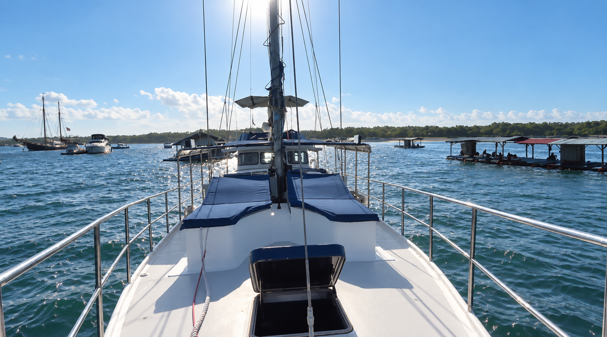
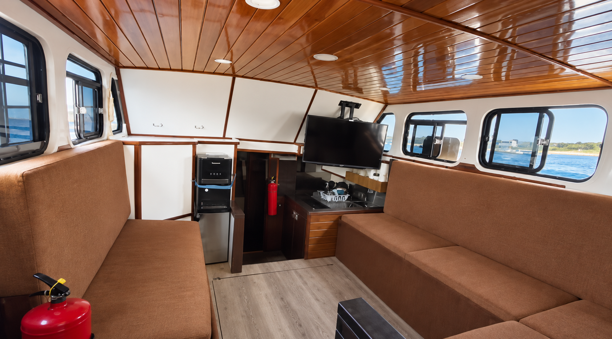
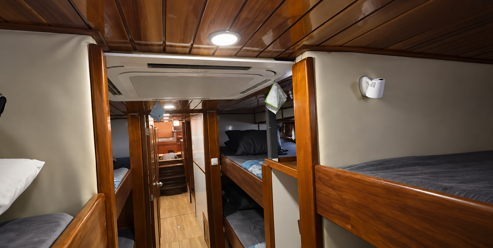
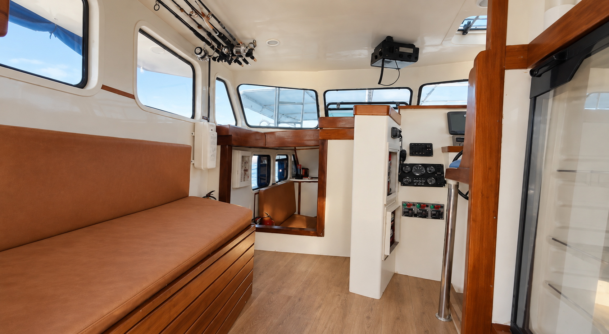
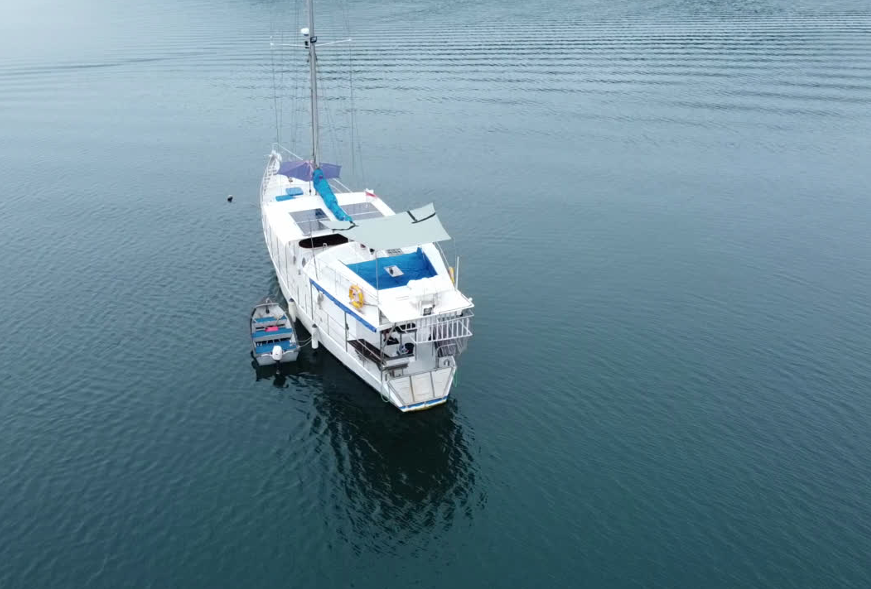

Morning
Wake up on the water.
Step outside for coffee or breakfast on deck, watch Mushroom Bay wake up around you and start the day with a swim straight from the boat if you feel like it.
There is nowhere you need to be unless you decide otherwise.
Stay Aboard
Your own private floating home in Mushroom Bay, with Lembongan, Penida and the surrounding islands just a tender ride away.
Enquire About a Stay
Mushroom Bay Nusa Lembongan
The stay
Gypsy Laut is not a hotel room beside the ocean. She is your own place on it.
Stay aboard in Mushroom Bay and make the boat your base for the islands. Wake up with the water around you, have coffee or breakfast on deck, swim straight from the boat and decide what you feel like doing from there.
Head ashore for lunch, explore Lembongan, take the tender across the water, find a surf break, go snorkelling or spend the afternoon doing very little at all.
Then come back aboard for sunset, dinner and another night on the sea.
There is no need to build every day around a fixed itinerary. Gypsy Laut gives you somewhere comfortable to come back to while leaving the islands open for however you want to explore them.

A day aboard

Morning
Step outside for coffee or breakfast on deck, watch Mushroom Bay wake up around you and start the day with a swim straight from the boat if you feel like it.
There is nowhere you need to be unless you decide otherwise.
Day
Stay aboard and slow everything down, or use the tender to make the surrounding islands part of the day.
Head ashore on Lembongan, find a beach, go for lunch, chase a surf session, explore the reefs or arrange a day around Penida. Surfboards and paddle boards are aboard when conditions are right, and the tender makes it easy to move between Gypsy Laut, shore and the water.
Sunset
Find a place on the bow or upper deck, open something cold and let the day finish around you.
Some days that might be after hours of exploring. Other days you might never have left the boat.
Evening
Have dinner aboard, relax in the saloon, sit outside under the night sky or simply disappear below deck when you are ready.
Gypsy Laut has the space and practical comforts to make staying aboard feel like living somewhere, rather than simply spending the night on a boat.

The boat as home
At 65 feet, Gypsy Laut has enough space for guests to spread out while still keeping the character of a real working vessel.
Outside, there are generous deck areas for lounging, eating, relaxing and watching the water. The bow and upper deck give you different places to spend the day, whether you want sun, shade or somewhere quiet.
Inside, the timber-lined saloon provides a comfortable place to retreat from the heat, relax in the evening or simply have some time indoors.



Air conditioning, Starlink and flatscreen TVs bring the practical comforts of home aboard without taking away from the reason you are there in the first place: living on the water.
Below deck, sleeping accommodation allows Gypsy Laut to host up to eight guests. The boat is large enough to feel comfortable for a proper stay, but still intimate enough that the sea remains part of everything around you.

Food aboard
Gypsy Laut has a fully functional onboard kitchen, with a gas stove and oven, plus a BBQ for cooking outside.
With three fridges and a full-size chest freezer, there is plenty of storage for food, drinks and provisions, including longer stays.
You can cook for yourselves, have the boat provisioned around what you like, or arrange a private chef to cook aboard.
A crew member will always remain aboard for safety, vessel operations and transit, but a chef is an additional arrangement rather than part of the standard stay.
Breakfast might be coffee and something simple on deck. Dinner could come from the galley, the BBQ or a private chef. And if fishing is part of the day, what comes back aboard can become part of dinner.
Beyond the anchorage
Staying aboard does not mean staying put. Gypsy Laut is the base. The tender gets you into the action.
The main tender is a 5.2 metre aluminium centre-console powered by a 90hp Suzuki, giving you an easy connection between the boat, shore and the surrounding islands.
Use it to head into Lembongan, reach nearby beaches, get to surf breaks, go snorkelling, support arranged dive experiences, head out fishing or explore further around the islands.
There is also a smaller aluminium dinghy aboard for additional access and boat-to-shore use.
Spend the morning aboard, head ashore for lunch, cross the water in the afternoon and come back for sunset. You do not have to choose between staying on a boat and experiencing the islands.
The boat becomes the place you experience them from.

The practical side
Gypsy Laut keeps the character of a working Indonesian vessel while giving guests the practical things that make spending real time aboard comfortable.
The feeling
The best way to understand Gypsy Laut is not through a list of specifications.
It is waking up and stepping outside to find the sea already there. It is swimming before breakfast. Taking the tender ashore because you feel like lunch somewhere else. Coming back to the boat when the sun starts dropping.

Cooking outside. Eating on deck. Sitting in the saloon when you want some air conditioning.
Having nowhere you need to check out of halfway through the day.
And knowing that tomorrow can look completely different.

Stay → Explore → Experience → Go Further
Some guests may want Gypsy Laut primarily as somewhere unusual and private to stay in Mushroom Bay. Others may use her as the starting point for days filled with surf, snorkelling, beaches, fishing, diving or exploring neighbouring islands.
Both work. You can spend most of your time aboard or barely sit still. Gypsy Laut is there when you come back.
And when you want to go further than Lembongan and Penida, a stay aboard can become the beginning of a longer private expedition through Indonesia.
Explore Private ExpeditionsBefore you arrive
Every stay is arranged around the guests, timing and conditions rather than forced into one fixed package. Tell us your preferred dates, how many people are travelling and what you would like your time aboard to feel like.
If you want to relax, keep things simple and spend most of the time around Mushroom Bay, we can build around that. If you want the boat to become a base for surfing, snorkelling, fishing, exploring or heading further, we can build around that too.
Provisioning, private chef arrangements, transfers and other requests can be discussed before you arrive.
An outdoor projector and screen for movie nights on deck are planned.
Start a Conversation
Tell us when you’re coming, who you’re travelling with and what you have in mind.
Start a Conversation